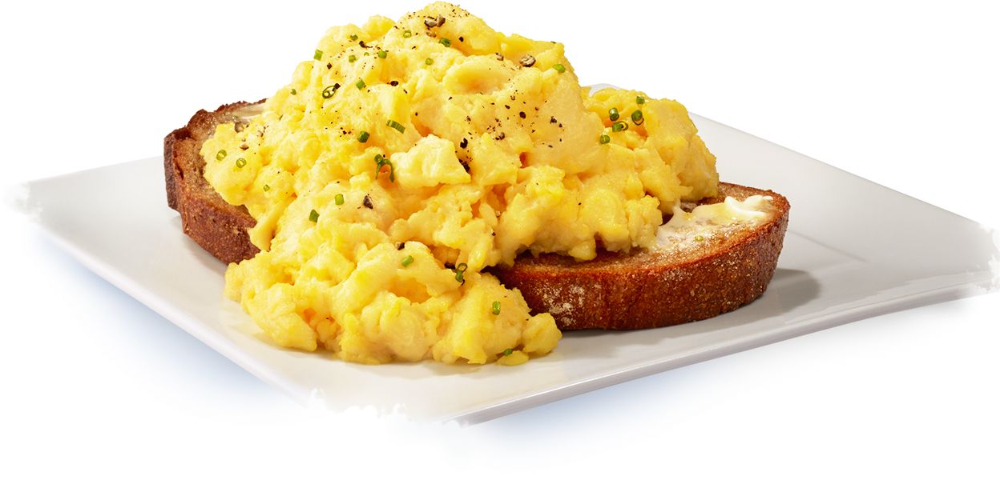

<--Back

Its just toast and eggs, made my way
- 1 Slice of Bread
- 2-3 Eggs
- Butter *Salted Butter preferred*
- In a small/medium pan on low temperature, place ~1.5 tbsp of butter.
- Once melted, add your eggs and scramble it your preferred way. I personally find runny-ish scrambled eggs tastes best.
- Toast the slice of bread to your ideal toast point, make sure for it to toast enough to support the weight of the scrambled eggs.
- Add some more butter to the slice (this part is optional), then slide the scrambled eggs from the pan onto the slice.
- Enjoy!
<--Back